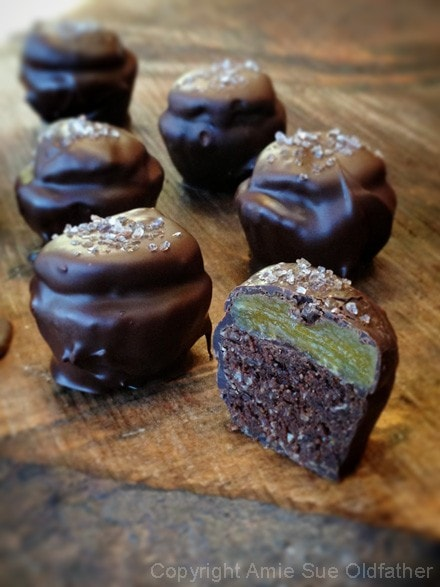
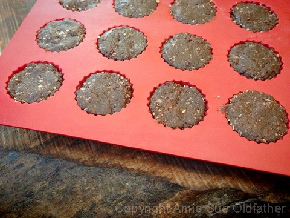
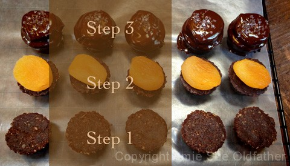
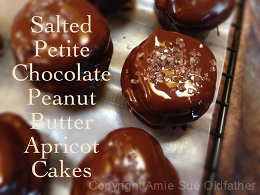

Salted Petite Chocolate Peanut Butter Apricot Cakes
~ raw, vegan, gluten-free ~
When it comes to food, texture is a big thing in our house. It is right up there with taste. Whenever Bob and I are taste testing, the first thing we do is take a bite and then roll the food around on our tongue. Often times, we talk more about the texture before even mentioning the flavor. I mean think about it, is there a food that you won’t eat due to its texture? We all have, well most of us, have foods that we steer clear of due to texture alone.
Describing food happens every day, we do it on a subconscious level. Take note sometime and listen to how people talk about food. You will most likely hear the words, “Crunchy, chewy, crispy, juicy, squishy, runny, solid, hard, soft, soggy, firm, creamy, fatty” and so on. Unless they really disliked the flavor of the food in general, then you will just hear, “GROSS”. haha
The sense of texture doesn’t just start and stop with the feel of texture… we also sense it visually. Just looking at the texture may stop us from even bringing food to our lips. For example; the appearance of an apple’s skin can tell us how we expect the texture to be when we come to eat it – if the skin looks wrinkly, then the apple will probably have lost its crunchy bite. Avocados, the ripeness of an avocado is best judged by feeling it in our hands. Gently squeezing it will tell us if its ready to eat that day or not until a few days later.
Now how did I get off on that tangent? Hehe, I guess because when I created this sweet treat when all was said and done, I took one look at it and realized that I had a lot of different textures happening in just one bite. The softness of the outer chocolate ushered your teeth right in… it threw out the welcome mat. As you draw your teeth together to create that first bite, your upper teeth meet a slight resistance yet welcoming invitation as they pierce down through the dried apricot. All at the same time, your bottom teeth sink into the soft and nutty cake, coming together to create a crunchy and chewy delight all rolled into one. I dunno, if I am not expressing the texture well enough… make them yourself, and you will see. :)

Ingredients:
yields 30 treats
Cakes:
- 1/2 cup packed Medjool dates, pitted and rehydrated
- 1 cup rolled, gluten-free oats, soaked & dehydrated
- 1/2 cup almond flour
- 1/4 tsp ground nutmeg
- 1/4 tsp Himalayan pink salt
- 1/2 cup raw coconut crystals
- 3/4 cup raw cacao powder
- 2/3 cup natural peanut butter
- 1 tsp vanilla extract
Cake accessories:
Preparation:
Cakes:
- Prepare the oats ahead of time. I don’t recommend using wet / soaked oats because it will add too much moisture to the cake. Use dry oats.
- In a small bowl place the pitted dates with enough warm water to cover them. Set aside to rehydrate while you work on the other ingredients.
- In a food processor, fitted with an “S” blade, combine the dried oats, almond flour, nutmeg, salt, coconut crystals, and cacao powder. Process until the oats break down and everything is well mixed.
- Drain the dates from the soak water and squeeze out the excess water from them.
- You can save the date water to add into a smoothie if you don’t want to waste it. :)
- Add the dates, peanut butter and vanilla to the food processor and process until everything sticks together when you pinch it.
- Press the batter into the mold and level off the top. Place in the fridge while you make the chocolate.
Cake accessories and assembly:
- Prepare melted chocolate. I let my melted chocolate firm up a bit before using to get a nice heavy coat on my cakes. The warmer the chocolate, the thinner the coat it will create.
- Remove all of the cakes from the mold and place on a sheet of wax or parchment paper.
- Take a small dab of chocolate and place it on the bottom of each dried apricot before placing on the cake. This will help the apricot adhere to the cake during the dipping process.
- Cover each cake one at a time with the chocolate.
- Place the cake in the middle of the bowl, upright, and ladled the chocolate over the top.
- Slipped a small fork under the bottom and lifted it straight up. Tap the handle of the fork on the edge of the bowl, allowing the excess chocolate to drop back down into the bowl.
- Slide the bottom of the fork along the edge of the bowl at the very end. This will remove excess chocolate, so it doesn’t puddle on the parchment paper while drying.
- Use a toothpick to push the cake off onto the parchment paper so I wouldn’t disrupt the finish of the treat.
- Sprinkle with coarse salt. Repeat process until all cakes are made.
- Allow the chocolate to dry at room temperature, the cooler the room, the quicker it will dry.
- Store in airtight container in a cool cabinet for about 1 week or in the fridge for 2-3 weeks.

I used my Silicone Chocolate, Candy and Peanut Butter-Cup Mold for my cake bases.
Very simple to make, just messy when it came to the chocolate part. Chocolate is ALWAYS messy. hehe


© AmieSue.com